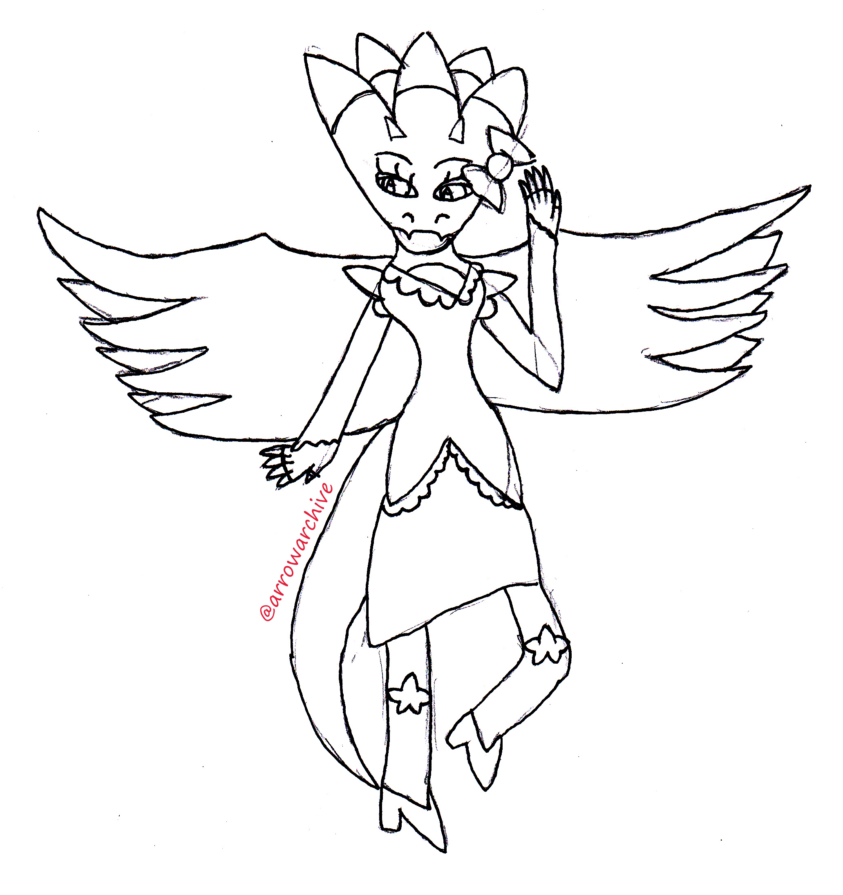
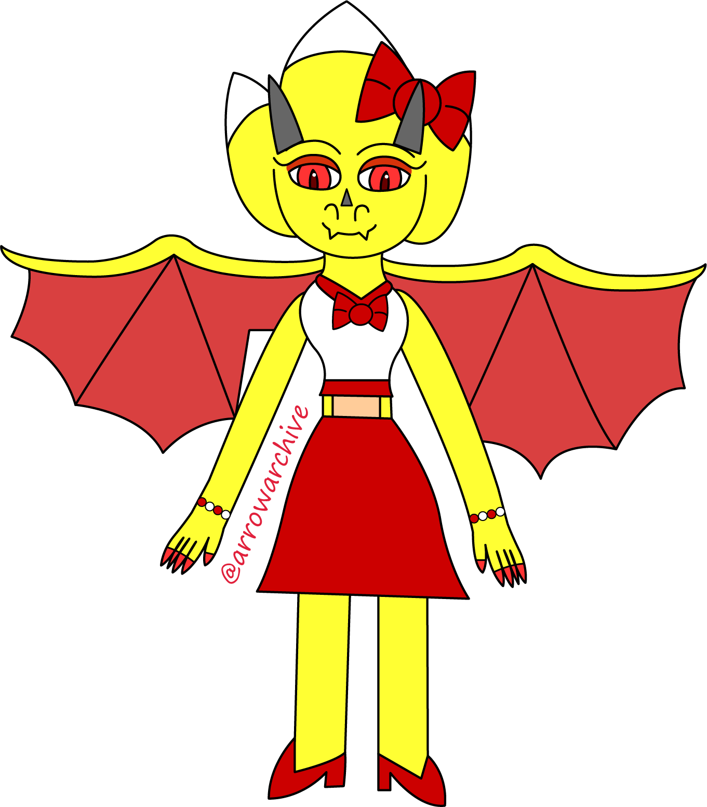
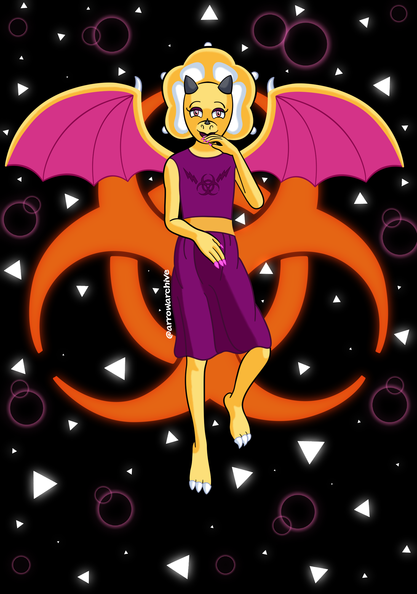

Introducing: Vaitu
  If you’re surprised that there’s a lot of art on this page, I don’t blame you. While redesigning Vaitu, I found sketches of her and several others on my hard drive. They are the oldest drawings I have, being about five or six years old!
The first drawing (on the top or left) is from 2017. I did mostly traditional art at the time, but I was very heavy-handed when drawing. I would erase as many pencil marks as I could and scan them into my computer so I could draw and color them in Adobe Illustrator. The scanned results weren’t pretty, if it wasn’t obvious. In 2018, I had the same approach, but my work was getting cleaner. I gave Vaitu a redesign to iron out the ridges, make her rounder, and change her outfit. I cleaned up that image using Illustrator and colored it in, providing the second image. I need to give some context for the redesign.
Vaitu, along with many others, was a part of a story featuring animals with elemental powers, called Ani-Mental. I devoted a lot of time to it from 2014 until 2018, even making a booklet with the character designs, but it crumbled when SPACE Warriors, which started the in 2015, proved to be a more flexible and interesting project. I kept the designs in case I wanted to use them later, but I never did; they stayed in my hard drive gathering dust until 2021, when Joyride’s concept required a large cast of characters. I knew the characters from Ani-Mental would need a facelift after three years, but Vaitu was one of the characters that needed it the most.
I rarely draw reptiles, and wings were never my strong suit. After some research, I mixed her dragon motif with a dinosaur motif, giving her a triceratops head to suit her features better. Her claws resemble sharp fingernails and her fingers are normal length, her fangs changed to a beak, her horns became shorter and rounder, her shoes and bow were removed, and her outfit received a MAJOR overhaul. I initially thought of her as a cheerleader, wearing red and white like a lot of them do, but I grew to hate that decision over time. It made her “too bright,” so I gave her a darker, plum-colored dress, pink nails, and an orange peplum while making her wings a rosy pink and her eyes a mix of pink and orange. Overall, she looks a LOT better compared to the last times I’ve drawn her.
As for her role previously? She was going to be a lightning elemental alongside her brother. She controlled red lightning, which was strong and forceful, while her brother’s blue lightning was weaker and flexible. They could combine their powers to form white lightning, which mitigated each of their drawbacks. I still enjoy the idea and plan to keep it, but I also want to give the siblings a venomous bite. Her bite would be weaker because her lightning is stronger, but her brother’s bite is the opposite. This is also why the biohazard symbol appears in the background and on her dress.
I spent WAY too long writing this, so I want to end the discussion on this note: some ideas may not last long, but if they didn’t work out, they shouldn’t be abandoned. They can be reused and integrated into other stories, with their longevity being a testament to the artist’s dedication and improvement. I have the sketches for Vaitu’s brother and the other characters in her story, but I can’t guarantee when and if I will draw them all. Only time will tell.